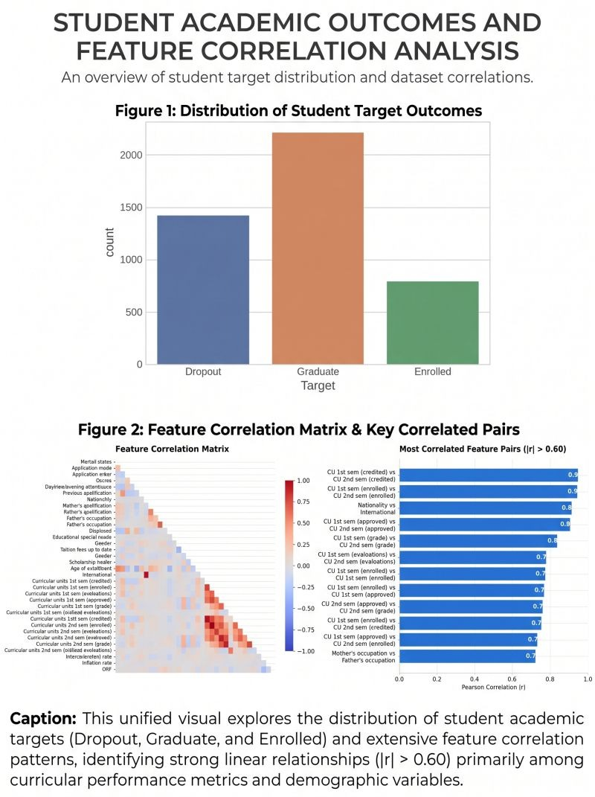

Student Retention Analysis & Prediction System
An end-to-end Machine Learning solution designed to predict higher education student retention outcomes (Graduate, Enrolled, or Dropout) combining statistical EDA, domain-specific feature engineering, class imbalance mitigation via SMOTE, hyperparameter tuning, and a 5-Fold Stacking Ensemble deployed via an interactive Gradio web application.
Early detection of students at risk of dropping out allows academic institutions to deliver timely financial, academic, and psychological interventions. This project classifies student academic status into three categories (Graduate, Enrolled, and Dropout) with high reliability and calibrated probabilities, mitigating minority class imbalance without causing data leakage.
- 77.76% Accuracy & 89.04% ROC-AUC achieved by the final 5-fold Stacking Ensemble.
- 72.10% Macro-F1 Score, achieving robust classification across the minority Enrolled class.
- Heterogeneous ensemble combining LASSO (L1), ElasticNet (L1+L2), XGBoost, and Gradient Boosting.
- Logistic Regression meta-learner trained strictly on out-of-fold cross-validated probabilities.
- Domain feature engineering capturing semester-over-semester grade/approval trends and financial risk.
- Interactive Gradio dashboard with dynamic feature masking, random test case generator, and model selector.

Executive Summary & Objectives
Early detection of students at risk of dropping out allows academic institutions to deliver timely financial, academic, and psychological intervention. This project tackles the retention prediction challenge through a multi-stage data science workflow:
- Primary Goal: Classify student academic status into three categories (Dropout, Enrolled, Graduate) with high reliability and calibrated probabilities.
- Key Challenge: Resolving class imbalance—particularly for the underrepresented Enrolled category—without causing data leakage.
- Solution: A Stacking Ensemble Classifier leveraging diverse base learners (L1/L2 regularized GLMs, Gradient Boosted Trees, and XGBoost) combined by a Logistic Regression meta-learner.
- Zero Data Leakage: Synthetic Minority Over-sampling Technique (SMOTE) is applied strictly inside cross-validation training folds.
- Calibrated Probabilities: Out-of-fold probability distributions empower academic advisors to gauge intervention urgency.
- Production Deployment: Live interactive application deployed on Hugging Face Spaces with dynamic input masking.
Dataset & Feature Architecture
The dataset originates from the Research Center for Endogenous Resource Valorization, Polytechnic Institute of Portalegre. It captures student demographic backgrounds, socioeconomic indicators, academic history, and macroeconomic context upon enrollment.
Key Feature Categories
- Demographics & Family Background: Age at enrollment, gender, nationality, displaced status, marital status, educational special needs, parental qualifications, and occupations.
- Academic Path & History: Application mode, application order, selected course, daytime/evening attendance, and prior qualification details.
- Academic Performance (1st & 2nd Semesters): Units credited, enrolled, evaluated, approved, and grade averages for both semesters.
- Financial & Social Support: Tuition fee payment status, debtor status, and scholarship holder status.
- Macroeconomic Indicators: Regional unemployment rate, inflation rate, and GDP growth rate at enrollment.
Domain Feature Engineering
To enhance predictive power, key ratio and trend features were constructed:
approval_rate_1st&approval_rate_2nd: Ratio of approved units to enrolled units per semester.eval_per_unit_1st&eval_per_unit_2nd: Ratio of evaluations conducted per enrolled unit.approval_rate_total&approved_total: Cumulative units approved across both semesters.zero_approved_any: Binary flag indicating zero approved units in either semester.approval_trend&grade_trend: Semester-over-semester differences in approval rates and average grades.grade_mean: Combined mean grade across 1st and 2nd semester evaluations.financial_risk: Interaction score combining debtor status and tuition fee updates.
Dataset Feature Mapping & Categorical Dictionary
Feature Dictionary
Comprehensive feature specification detailing demographics, socioeconomic predictors, curricular units, and engineered interaction terms used across modeling stages.
Exploratory Data Analysis & Preprocessing
Data refinement and statistical feature selection followed a structured 3-phase methodology:
- 1. Statistical Hypothesis Testing: Applied ANOVA, Chi-Square contingency tests, Fisher's Exact test, and Tukey HSD to isolate the most statistically significant feature subsets for student outcome distinction.
- 2. Multicollinearity Removal: Filtered highly collinear features (
|r| > 0.85) to eliminate variance inflation and maintain linear model stability. - 3. Imbalance Mitigation via SMOTE: Applied Synthetic Minority Over-sampling Technique (SMOTE) strictly inside cross-validation training folds, ensuring that test partitions remained representative of genuine real-world population distributions.
Machine Learning Architecture & Stacking Ensemble
The system utilizes a 5-Fold Cross-Validated Stacking Ensemble architecture. Four complementary base estimators generate out-of-fold probability predictions, which are passed into a Logistic Regression meta-learner.
5-Fold Out-of-Fold Probabilities"] end subgraph S4["Final Outcome"] F["Predicted Class: Graduate / Enrolled / Dropout"] end X --> A X --> B X --> C X --> D A -->|OOF Probabilities| E B -->|OOF Probabilities| E C -->|OOF Probabilities| E D -->|OOF Probabilities| E E --> F
Model Performance & Evaluation
The Stacked Ensemble achieved top-tier performance on held-out test data, outperforming individual base models and statistical baselines across Accuracy, Macro-F1, and ROC-AUC:
| Model | Accuracy | Macro-F1 | ROC-AUC | Description / Strategy |
|---|---|---|---|---|
| FINAL STACKED ENSEMBLE | 77.76% | 72.10% | 89.04% | Meta-Learner combining all 4 base models |
| Final XGBoost (Tuned) | 77.40% | 72.48% | 88.67% | Gradient Boosted Decision Trees |
| Final Gradient Boosting (Tuned) | 77.03% | 72.37% | 88.84% | Scikit-Learn Gradient Boosting |
| Final LASSO (Tuned) | 74.99% | 70.88% | 88.45% | Logistic Regression with L1 Penalty |
| Final Elastic Net (Tuned) | 74.95% | 70.83% | 88.42% | Logistic Regression with L1 + L2 Penalty |
By fusing linear regularization (LASSO, ElasticNet) with non-linear tree ensembles (XGBoost, Gradient Boosting), the Stacked Ensemble achieves an optimal balance: capturing complex non-linear feature interactions while resisting overfitting on noisy tabular indicators.
Complete Model Comparison Benchmark
15 Model Evaluation
Comprehensive empirical leaderboard comparing all 15 baseline, statistical, regularized, and ensemble model variants tested throughout research iterations.
Stacked Ensemble Confusion Matrix & Diagnostic Views
Confusion Matrix & AUC
Multi-class diagnostic metrics demonstrating sharp separation between Dropout and Graduate outcomes alongside balanced recall for the underrepresented Enrolled student cohort.
Web Application & Interactive UI
The production Gradio web application provides an intuitive decision-support tool for educational advisors and administrators:
- Model Selector: Dynamically switches active model pipelines (Stacked Ensemble, XGBoost, Gradient Boosting, ElasticNet, LASSO).
- Dynamic Feature Masking: Automatically shows or hides form fields based on the selected model's exact required features.
- Random Case Generator: Instantly populates realistic synthetic student profiles for rapid scenario testing.
- "How It Works" Tab: Interactive visual guide with embedded charts explaining the stacking architecture, metrics, and confusion matrices.
- "Dataset Dictionary" Tab: Comprehensive feature documentation explaining categorical mappings and unit definitions.
Interactive Gradio Application Dashboard
Production UI
Live interactive dashboard featuring real-time risk level computation, probability dials, and explainable intervention guidance.
Deployment & Live Access
The application is deployed and publicly hosted on Hugging Face Spaces:
License & Attribution
- Dataset Credit: Research Center for Endogenous Resource Valorization, Polytechnic Institute of Portalegre.
- Project Developer: Chandima Bandara.